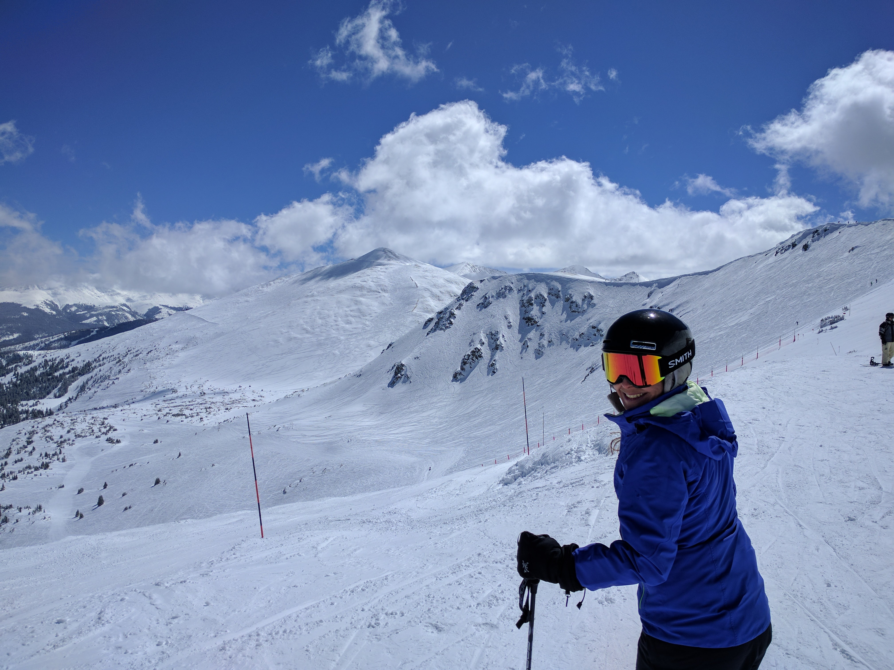
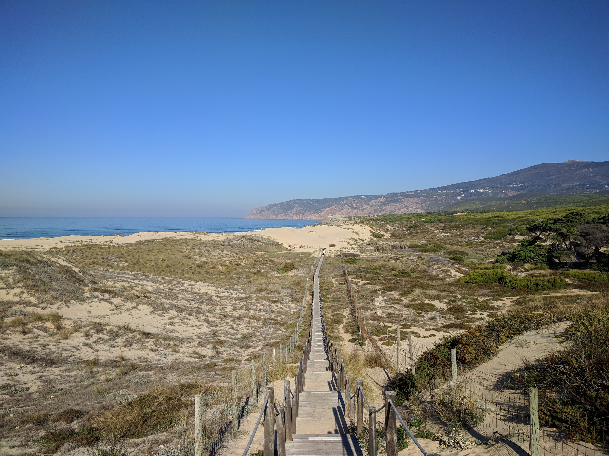
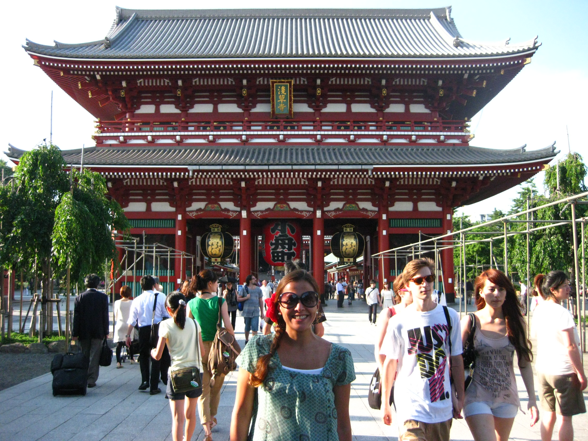
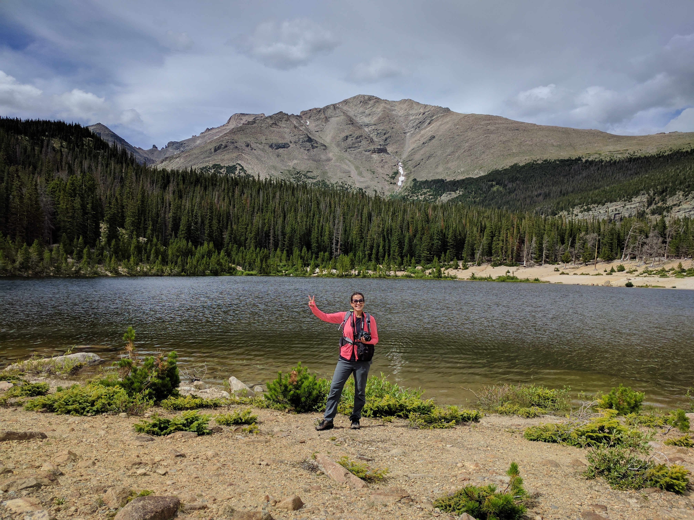
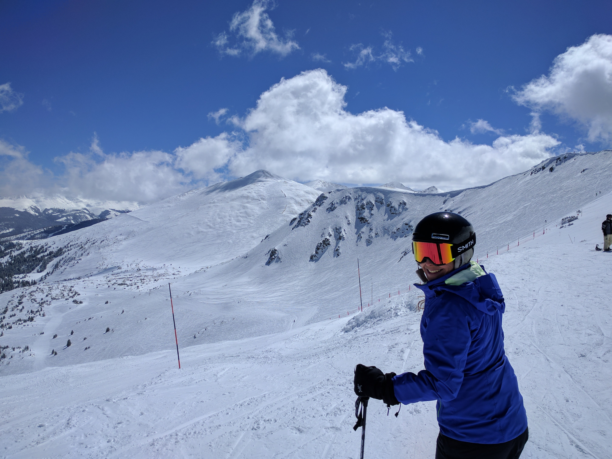
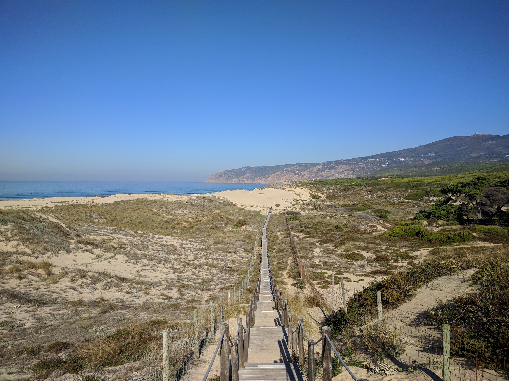
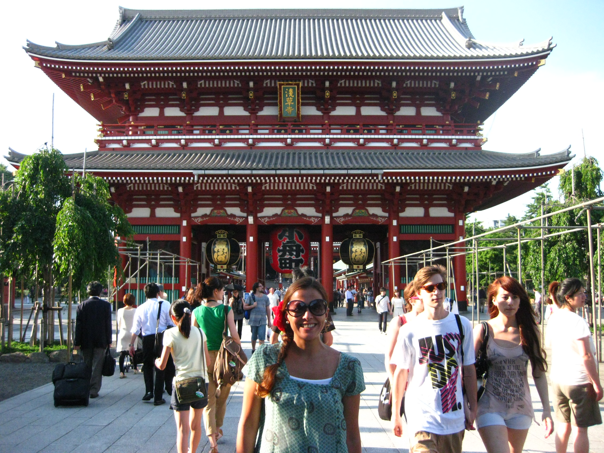
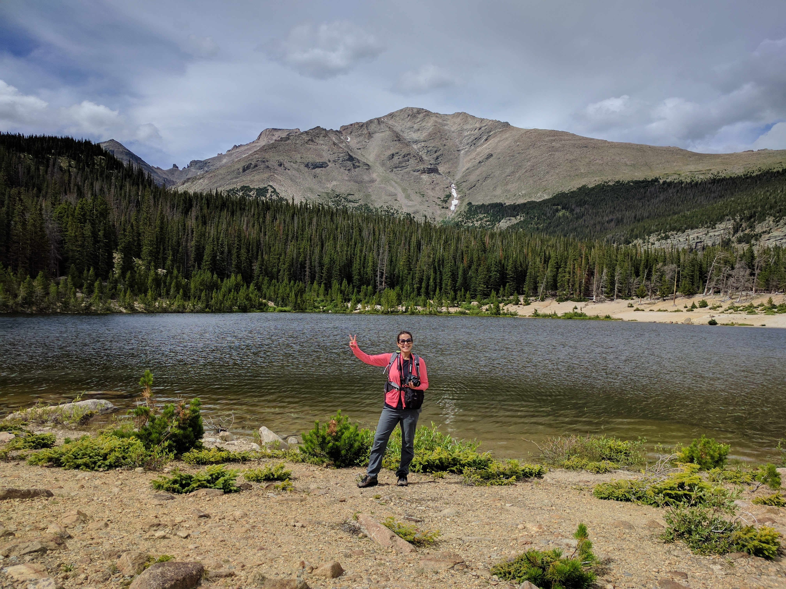

ABOUT ME
I am a pianist with pretensions to become a web developer too.
I am an adventurous, dreamy, determined and art lover person. I like to create and communicate things. And since I am also a curious person, I like to explore in general, I mean, places, new technologies, new cultures with their meals, music, traditions, etc.
When I was 4 years old I started playing piano and since then I have not stopped.
I begun my musical studies at the “University of Andes Music School” in the city of Merida, which is located in the mountains of the Venezuelan Andes. When I
was twenty years old, I moved to Moscow to continue my studies at the Moscow State Conservatory P. I. Tchaikovsky. Then I moved to Barcelona (Spain) where I graduated in The Bachelor of Music in the specialty of Piano at the Liceu Conservatory.
After some years living and working in Barcelona I decided to move and see what other opportunities I could find in other parts of the world. That decision led me to spend some time living in: London, Tokyo, Kuala Lumpur, Breckenridge, Padua, Boulder and now Denver.
 






